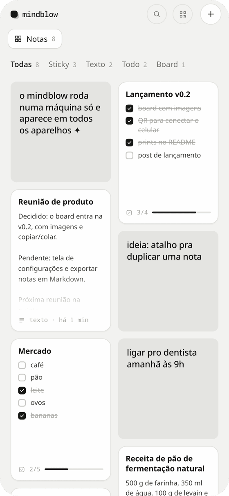
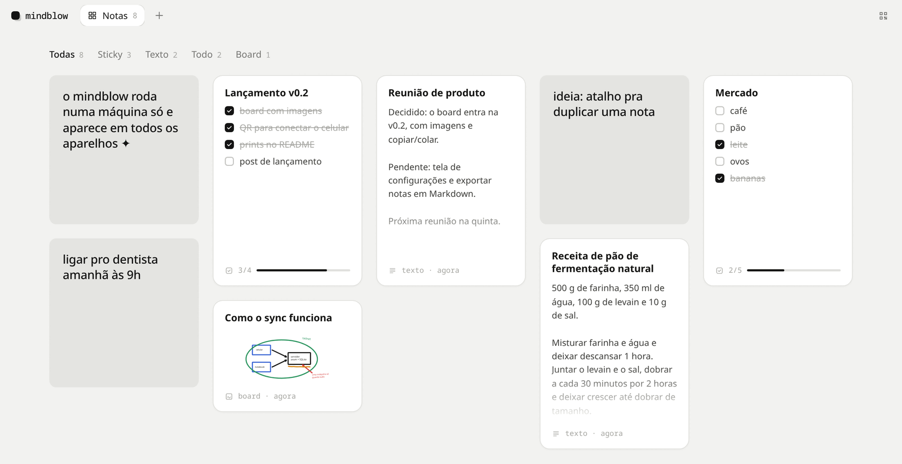
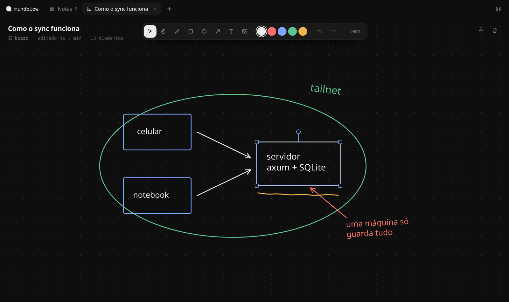

mindblow
notas que moram numa máquina só e aparecem em todos os seus aparelhos ✦
notas que moram numa máquina só e aparecem em todos os seus aparelhos ✦
Grátis e de código aberto, para Linux e Windows.
Baixar para Linux.AppImage · 77 MBsem conta, sem assinatura, sem nuvem de ninguém

no celular vira app na tela inicial

Outros apps criam, mudam e tiram notas por HTTP.
o instalador do Windows tem 1,8 MB
Rust no servidor, Svelte na tela, Tauri na janela
O mindblow é um app de notas minimalista: um grid com todas as notas, abas em cima e mais nada no caminho.
As notas moram numa máquina só, num servidor pequeno em Rust com SQLite. Os outros aparelhos chegam até ela pela tailnet do Tailscale. No computador ele abre numa janela própria, no celular vira app na tela inicial. Mudou num, aparece nos outros na hora.
Não tem conta, não tem assinatura e não tem nuvem de ninguém no meio. É código aberto, com licença MIT.
Grátis e de código aberto. Escolha o app desktop, que já traz o servidor, ou só o servidor para deixar numa máquina que fica ligada.
O app abre o servidor em localhost:7341. Para usar outra máquina como servidor, veja Deploy e configuração.
Compila, sobe o serviço e publica na tailnet. No fim, imprime o link para abrir nos outros aparelhos.
git clone https://github.com/mindblow-org/mindblow cd mindblow ./deploy/install.sh
Abra o link da tailnet no navegador e use "adicionar à tela inicial". Para conectar outro aparelho, o botão de QR no canto de cima do app mostra o código e quem está conectado agora.
O formato do card já diz o tipo.
Um quadrado cinza, como papel colado. Só texto curto, ou uma foto que vira polaroid.
Título e corpo, num card em pé do tamanho de meia folha A4.
Título e itens com checkbox. O card mostra os primeiros itens e quanto já foi feito.
Quadro branco com caneta, formas, setas, texto e imagens. Dá para selecionar vários, girar, copiar e colar.
Qualquer nota aceita imagens: cole com Ctrl+V, arraste para cima dela ou use o botão de imagem. Fixe as importantes no alfinete e elas sobem para o topo do grid, em todos os aparelhos.

O app desktop para Linux e Windows abre o servidor local e mostra as notas numa janela própria. Cada nota aberta vira uma aba, e Ctrl+W fecha.
Qualquer nota pode virar uma janela separada, e essa janela pode ficar fixa por cima das outras.
Ctrl+K abre a busca de qualquer lugar, até no meio de uma nota. Ela procura no título, no corpo e nos itens, sem ligar para acento. Claro e escuro seguem o sistema.
A interface usa a mesma API REST que fica aberta para os seus scripts. JSON em tudo, na porta 7341.
# cria um sticky
curl --json '{"kind":"sticky","body":"backup ok"}' \
$MB/api/notes
# busca em todas as notas
curl "$MB/api/notes?q=mercado"
# marca um item de um todo
curl -X PATCH --json '{"done":true}' \
$MB/api/notes/$ID/items/$ITEM
As mudanças chegam aos aparelhos conectados por WebSocket, em /api/live. Se quiser, o servidor exige um token com MINDBLOW_TOKEN.
O servidor guarda as notas e as imagens num arquivo SQLite, na máquina em que ele roda: ~/.local/share/mindblow/mindblow.db. Backup é copiar esse arquivo.
O acesso de fora passa pela tailnet do Tailscale, uma rede privada e criptografada em que só os seus aparelhos enxergam o servidor.
Para conectar um aparelho novo, o botão de QR no canto de cima mostra o código e a lista de quem está conectado agora.
Esta página funciona como o app. Faça cada coisa e o item se marca sozinho.
Seus stickies e rabiscos ficam só neste navegador.